Code
library(tidyverse)
library(viridis)Version using R code with no GenAI
Goal: This module introduces the fundamental principles of exponential population growth, explores how key parameters influence population size, and applies this knowledge to a real-world conservation case study involving the endangered Miami blue butterfly. Students will leverage both traditional ecological concepts and the power of generative AI to gain a comprehensive understanding of population dynamics.
By the end of this module, students will be able to:
Reviewing: Review the provided introductory material on exponential growth in this document (Part 1). Pay close attention to the definitions of N0 (initial population size), λ (growth rate), and t (time). With the help of your AI coding assistant, prepare your answers for Questions 1-5 (you will need to submit these to Canvas later).
Case study: - Task 2a: Review the provided resources on the Miami blue butterfly (Part 2). Understand the threats to its population and the conservation efforts being undertaken. - Task 2b: Model Application: Simulate data and make plots of Miami blue butterfly populations with your AI coding assistant. - Task 2c: Conservation Recommendation: Based on your understanding of exponential growth and the challenges faced by the Miami blue butterfly, formulate a brief recommendation for a land manager. Discuss the limitations of applying a simple exponential growth model to the Miami blue butterfly population. What other factors might influence its growth rate in the real world?
library(tidyverse)
library(viridis)We will start with a simple example of exponential growth. Think about a hypothetical population that starts with 2 individuals. Let’s imagine the population size doubles every year (\(\lambda=2\)) and has distinct generations. Therefore, we will model discrete population growth, rather than continuous population growth. We will simulate 10 generations (time = 10). How large will the population be in year 10? Below I first set up a few variables:
N0 is the population size at time zero.
lambda (\(\lambda\)) is the population growth rate. Sometimes I’ll call this ‘R’ for convenience. When (\(\lambda (or R)>1\)), the population size increases. When (\(\lambda (or R)<1\)) the population size decreases.
time (t) is the number of years we want data for.
Nt is the population at times (t).
Then I set up the exponential growth equation for discrete population growth:
\(N_{t+1} = N_t * \lambda\).
Another way to write this equation, which is more convenient to code in R is:
\(N_t = N_0 * \lambda^t\).
## lines 3-10 in associated R code
NO <- 2
lambda <- 2
time <- 0:10
Nt <- NO * lambda**time
ggplot(data=NULL,aes(x=time, y=Nt)) + geom_point(size=2) + geom_line() + theme_bw()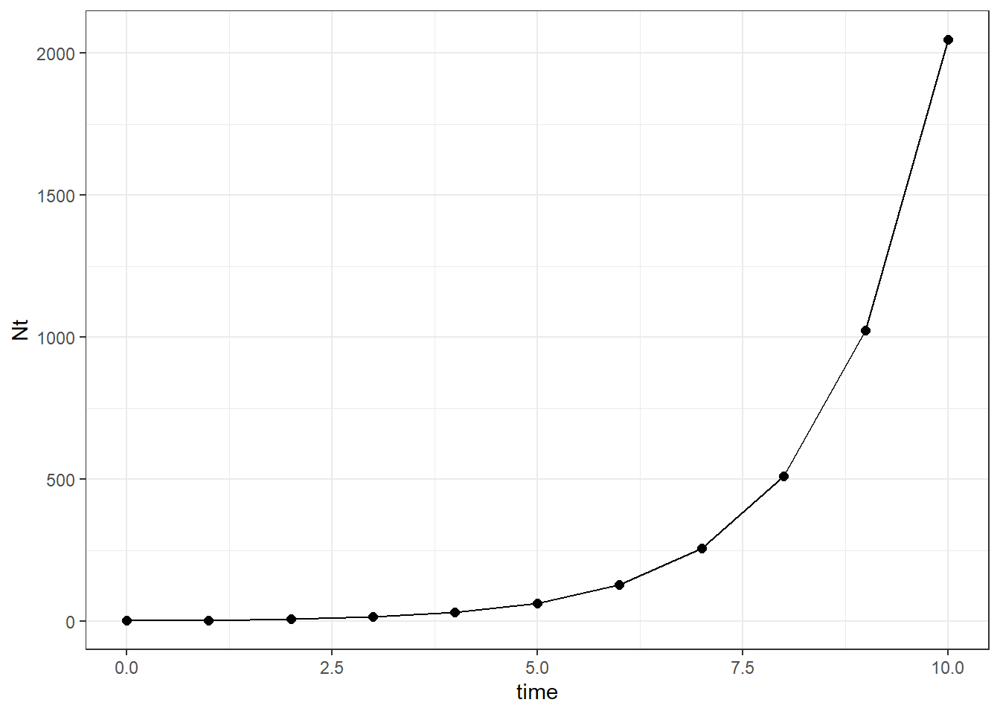
The above plot shows the exponential growth for this scenario. To get the exact population size at time 10, you will need to do a little math using the equations above.
Now we will look at the effect of changing the starting population size. Adjust the starting populations size to \(N_0\) = 10, 20, and 40 and calculate the new answers.
## lines 13-22 in associated R code
N0 <- c(2,10,20)
lambda <- 2
time <- 0:10
Nt.s <- sapply(N0, function(n) n * lambda**time) %>% as.data.frame() %>% cbind(time) %>% pivot_longer(cols=1:3, names_to = 'group', values_to = 'N')
## Population sizes for the six years
ggplot(data=Nt.s, aes(x=time, y=N, color=group)) +
geom_point() +
geom_line(linewidth = 1.5) +
scale_color_viridis(discrete = T)+
theme_bw()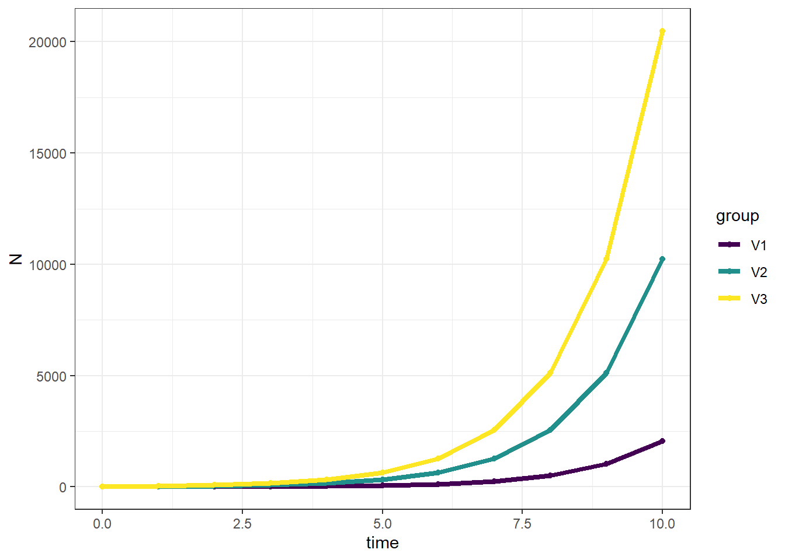
We can also view the data on the log_10 scale, use the plot below to answer Question 3.
## Population sizes for the six years on $log_{10}$ scale
ggplot(data=Nt.s, aes(x=time, y=N, color=group)) +
geom_point(size=3) +
geom_line(linewidth = 1.5) +
scale_color_viridis(discrete = T)+
scale_y_log10() +
theme_bw()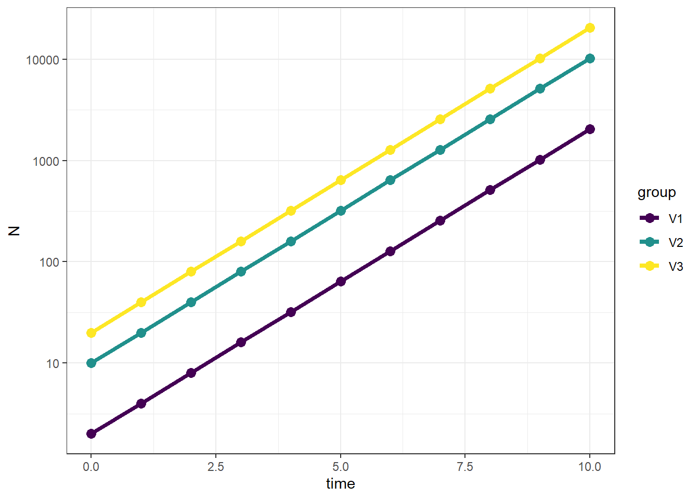
Below is a plot with lambda values of 0.5, 1, and 2 and the linear scale and log-scale (second below).
## lines 25-34 in associated R code
N0 <- 2
lambdas <- c(0.7, 1, 1.5)
time <- 0:5
Nt.all <- sapply(lambdas, function(x) N0 * x**time) %>% as.data.frame() %>% cbind(time) %>% pivot_longer(cols=1:3, names_to = 'group', values_to = 'N')
## Population sizes for the six years
ggplot(data=Nt.all, aes(x=time, y=N, color=group)) +
geom_point(size=3) +
geom_line(linewidth = 1.5) +
scale_color_viridis(discrete = T)+
theme_bw()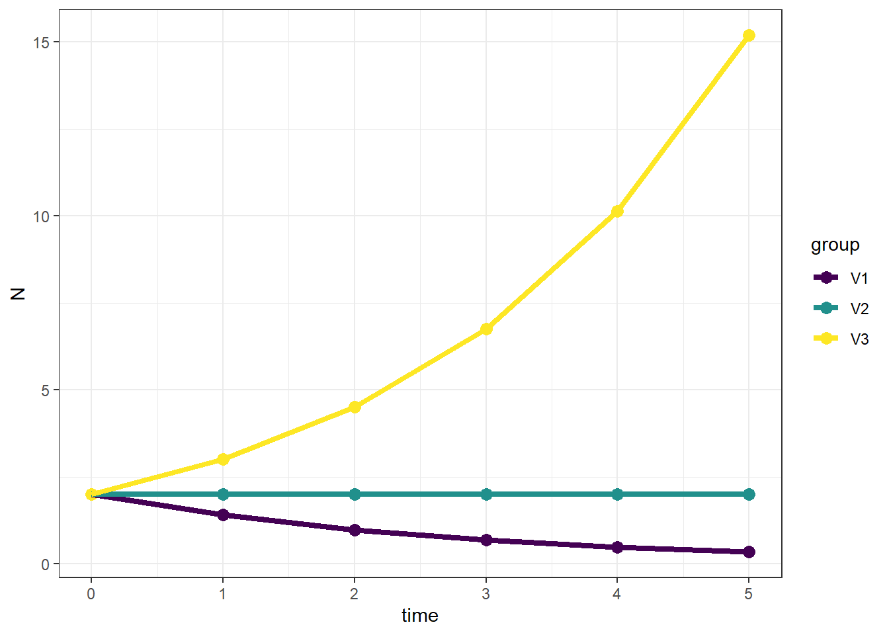
## Population sizes for the six years on $log_{10}$ scale
ggplot(data=Nt.all, aes(x=time, y=N, color=group)) +
geom_point(size=3) +
geom_line(linewidth = 1.5) +
scale_color_viridis(discrete = T)+ scale_y_log10() +
theme_bw()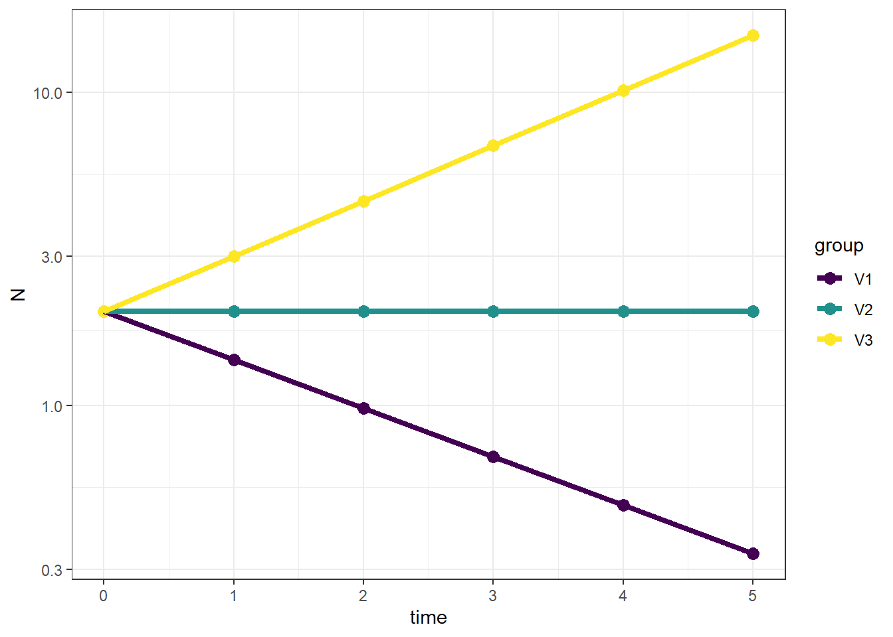
The Miami blue Cyclargus thomasi bethunbakeri is an endangered species in Florida. It was once widespread and occurred throughout much of south Florida, but now only one small population remains in a preserve. Read more about the biology here.
Below we will analyze data for population size counts for a the endangered Miami blue butterfly. First, read more about conservation actions being taken by the Daniels Lab here at UF and watch the video.
Now we will simulate 21 years of data where researchers counted the butterflies at several sites across their range. The values are estimated population size each year. Please note that these are hypothetical data that we are simulating and do not reflect actual abundances of the butterfly.
year <- 0:20
set.seed(5)
Count <- abs(round(rnorm(21, (100*1.05^year), 70),0))
dat <- as.data.frame(cbind(year,Count))# plot dynamics
ggplot(data=dat, aes(x=year, y=Count)) +
geom_point() +
geom_line() +
theme_bw()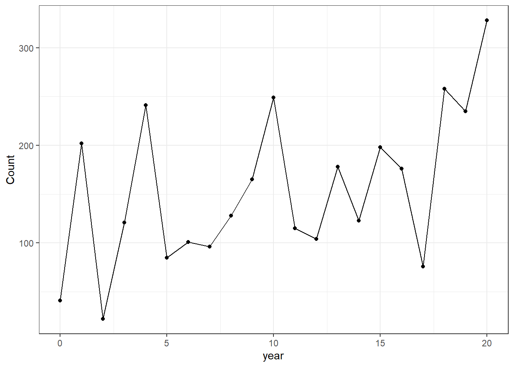
There is quite a bit of up and down in the population numbers. We can calculate the rate of increase (𝜆 or R) for each year-to-year transition. Here is the plot, where ‘obs.R’ is the increase or decrease in each year:
dat$obs.R <- NA
dat$obs.R[2:21] <- dat$Count[2:21]/dat$Count[1:20]
obs.R <- dat$Count[2:21]/dat$Count[1:20]
ggplot(data=dat, aes(x=year, y=obs.R)) +
geom_point(size=2) +
geom_line() +
geom_hline(yintercept=1,lty=2) +
theme_bw()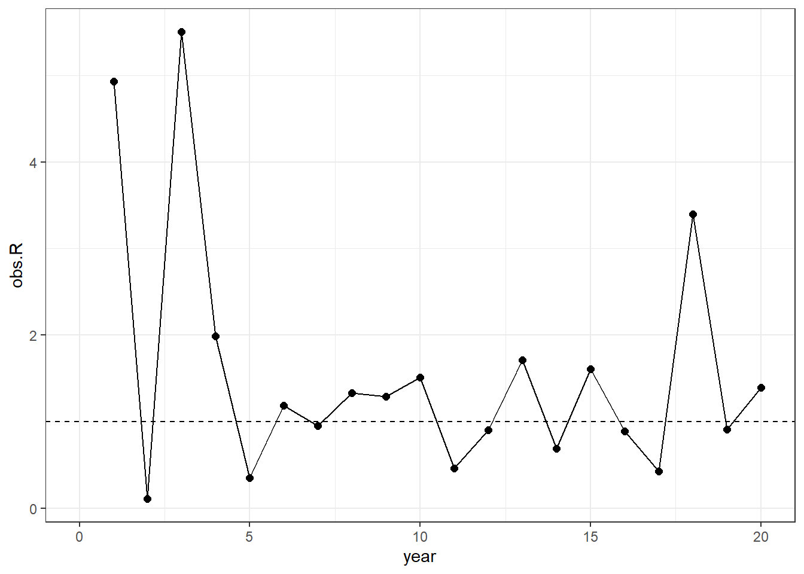
And here is a plot showing observed R against population density of the previous year:
ggplot(data=NULL, aes(x=dat$Count[1:20], y=obs.R)) +
geom_point(size=2) + geom_abline(intercept=1,slope=0, linetype="dashed") +
labs(x="Population density",y="observed R")+
theme_bw()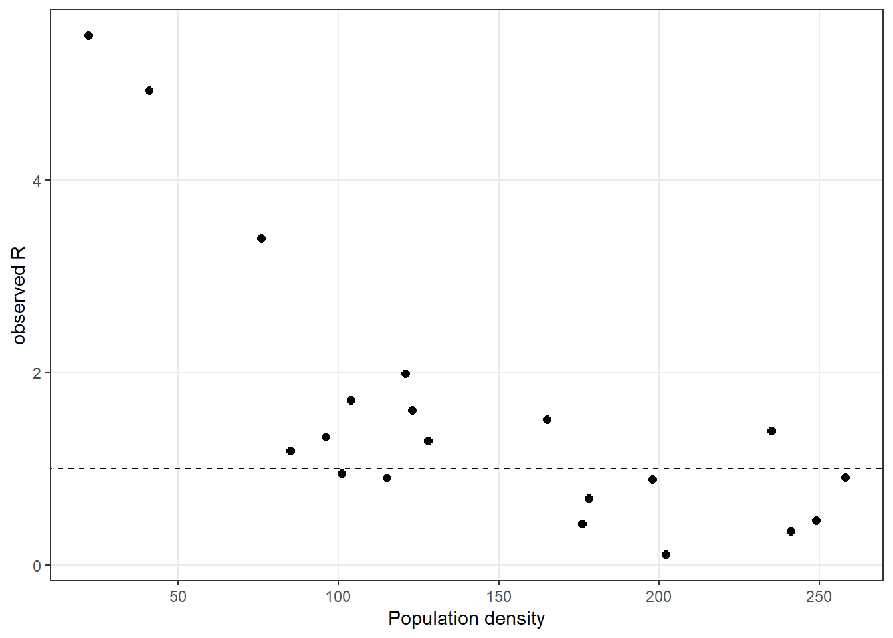
Think about what these results imply about the population dynamics and what may or may not regulate the populations?
WWe know the population size and the rates of increase/decrease for 20 transitions that we have data for. Now we want to know what the population size might be in 50 years. Will it substantially increase? Is there a chance the Miami blue will go extinct? We can answer these questions by randomly sampling from our list of 20 R’s. We do this 50 times to simulate population dynamics for 50 years. What density should we start the simulation? We could pick the average density (~100) or the minimum (22). Let’s be conservative and start our simulated population at the minimum of 22 butterflies. Here is the plot for one of these simulations:
## lines 62-75 in associated R code
years <- 0:50 #setup a vector for years from 0 to 50
set.seed(1) # set seed for the randomization so we can reproduce the randomized results
sim.Rs <- sample(x = obs.R, size = 50, replace = TRUE) # this line randomly samples values from 'obs.R' 50 times with replacement
out50yr <- numeric(length(years))
out50yr[1] <- min(dat$Count)
for (t in 1:50) out50yr[t + 1] <- {
out50yr[t] * sim.Rs[t]
}
ggplot(data=NULL, aes(x=years, y=out50yr)) +
labs(y="count") +
geom_point() +
geom_line() +
theme_bw()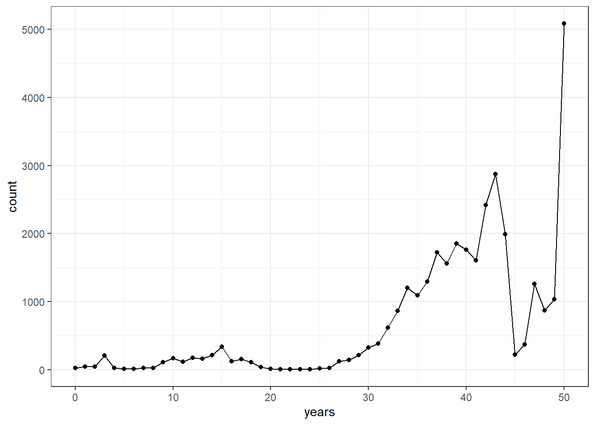
Booming!
This is just one random simulation. We might want to do many versions of this simulation to get an idea of how variables these results might be. We can conduct a sensitivity analysis by running the simulations for 100 populations. From these results, calculate 1) the percent of populations that go extinct, 2) the percent of populations that exceed 1 million butterflies in any year, and 3) the 2.5 quantile and 4) 97.5 quantile for the final population sizes.
Now we should see we have run 100 simulated populations, each with dynamics for 50 years. What do we see? Are they all the same? Why or why not? Here is a plot showing only 10 populations so its easier to see:
PopSim <- function(Rs, N0, years = 50, sims = 1) {
sim.RM = matrix(sample(Rs, size = sims * years, replace = TRUE),
nrow = years, ncol = sims)
output <- numeric(years + 1)
output[1] <- N0
outmat <- sapply(1:sims, function(i) {
for (t in 1:years) output[t + 1] <- round(output[t] * sim.RM[t, i], 0)
output
})
return(as.data.frame(outmat))
}Some of the populations are so big that it’s hard to see the patterns for some of the populations. Probably you coding assistant will plot the data on both the linear and log scale so you can visualize them better. If not, you may need to ask for the plots on the log scale.
## lines 92-100 in associated R code
sim10 <- as_tibble(PopSim(Rs = obs.R, N0 = 43, sims = 100)) %>%
mutate(year = 0:50) %>%
pivot_longer(-year, names_to = "sim", values_to = "count")
# plot the 10 simulated populations
ggplot(sim10, aes(x=year,y=count,color=sim))+
geom_line(linewidth = 1) +
scale_color_viridis(discrete = T)+ theme_bw()+
theme(legend.position = "none")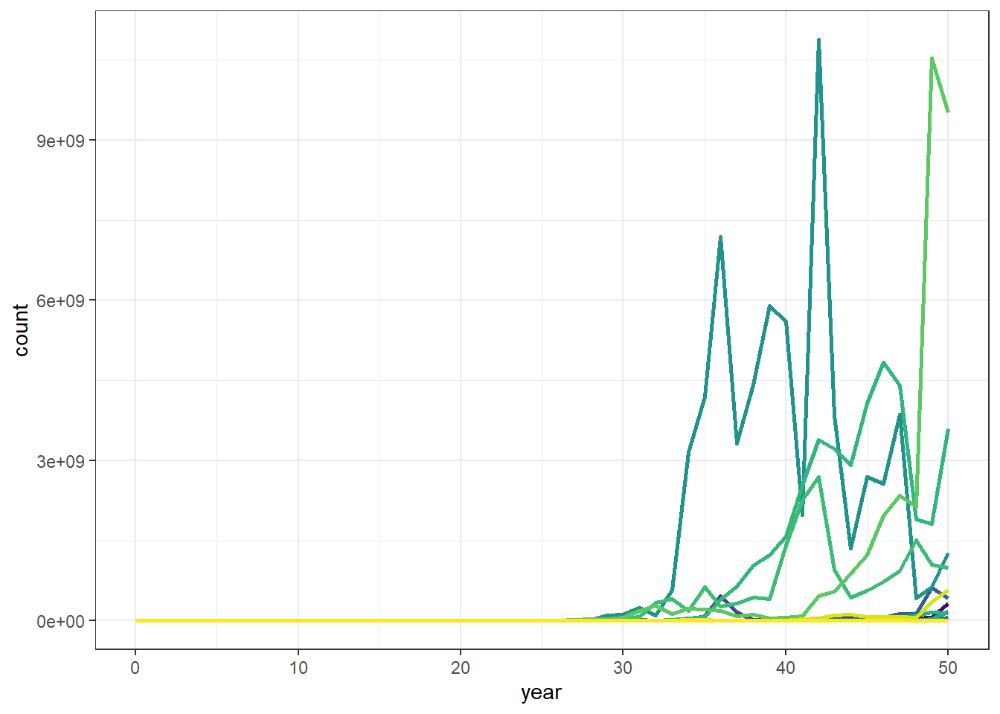
ggplot(sim10, aes(x=year,y=log(count+1),color=sim))+
geom_line(linewidth = 0.75, alpha=0.75) +
scale_color_viridis(discrete = T)+
theme_bw() +
theme(legend.position = "none")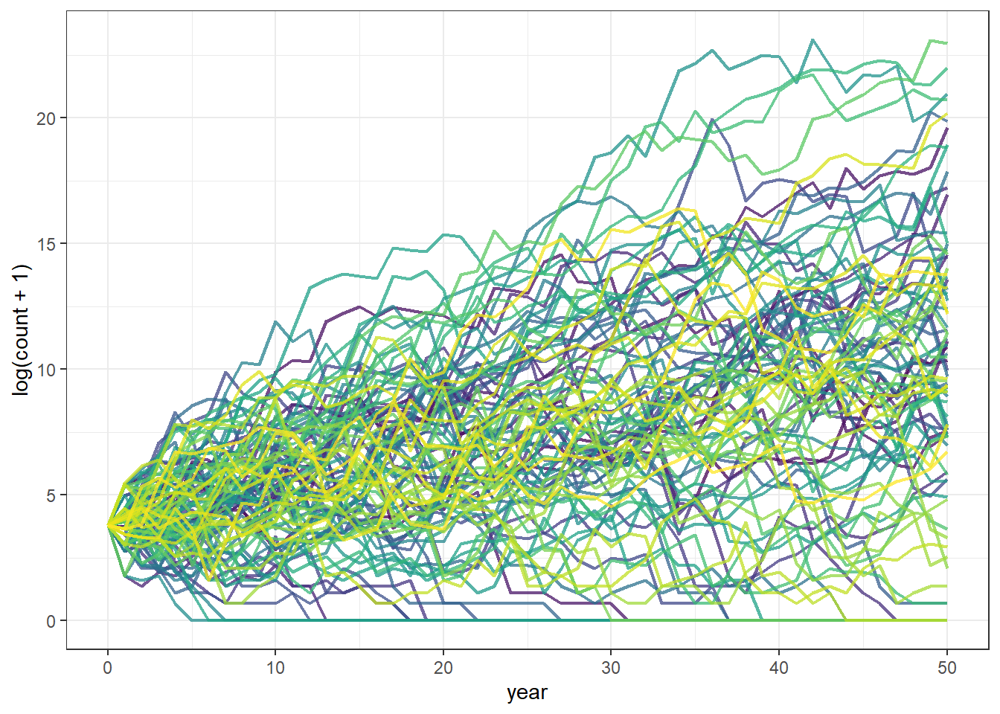
year50_data <- sim10[sim10$year == 50, ]
data.frame(
n_extinct = sum(year50_data$count == 0),
n_greater_1mil = sum(year50_data$count > 1000000),
q02.5 = quantile(year50_data$count, probs = 0.025),
q97.5 = quantile(year50_data$count, probs = 0.975)
) n_extinct n_greater_1mil q02.5 q97.5
2.5% 18 21 0 1135061538